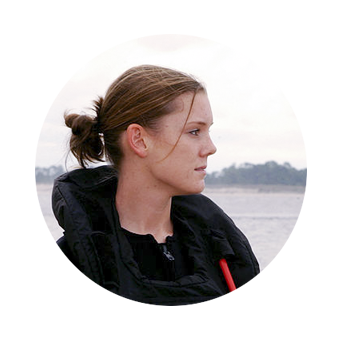

Rig-it, Mobile application for Emergency Medical Technicians
Rig-it mobile application is for making ambulance equipment checks more interactive and creates a positive feedback loop of helpful behavior among Emergency Medical Technicians.
Project Timeline
Nov 2014 - Dec 2014
Deliverable
UI Design
Interactive prototype
High fidelity mockup
My Contribution
User Research
User Interface Design
Prototyping
How to improve ambulance equipment check process?
Emergency Medical Technician's shift starts with 1-2 hours of ambulance equipment check. Missing any equipment can be critical in emergency situations. However, the check process is often done with a paper and a pen filled with long lists of items with checkboxes.
Sometimes, they have no time to finish the check, and run to take care of their patients.
1-2 hours of ambulance equipment check,
Rig-it aimed to streamline the process of checking both the equipment inside the main cab and the back of the ambulance, in addition to maintaining the vehicle itself.
Checklists are divided into a few sections based on the ambulance compartment. EMTs(Emergency Medical Technicians) go through each section, teamed up in two people. We provided the list based on these compartments. EMTs can jump between items or mark items as to be replenished.
Add to Replenish Item
This acts as a 'shopping' list for when they are going through the check.
Check
When a section has been completed, it will be grayed out, but the user can still click on it.
Skip
Users can skip the item to bring this at the end of the list.
Provide positive feedback loop.
One of the key insights that we learned from our user research was the lack of appreciation in EMTs works. Even though Emergency Medical Technicians were aware of the importance of their work, they were discouraged by people treating them as drivers. In addition, Emergency Medical Technicians were strongly tied into their community sharing their experiences. Motivated by this, we pitched the 'Send Thanks' function. This will also encourage the EMTs to help the next shifts to refill the items that they couldn't get replenished.
Send Thanks
On the Thanks Page, the user will be able to see the thank you messages from other EMT crew members. At the top, there is a count of the number of thanks that the user has received.
Heads Up Item
A Heads Up item has a faded out red background with the small title, in contrast to the white and gray background for regular items. This difference is meant to differentiate Heads Up items from regular items so that when working through a particular section the EMT will pay more attention to the Heads Up items.
Persona
We were provided with a task to create an application that helps daily EMTs work flow, as well as personas.

"I am a tech-savvy, who loves to try out new applications. As a mother of a child, I love to share my stories as an Emergency Medical Technician."
"I am not very comfortable using complicated applications with small texts. I want to work in a more organized way and get confident with my daily jobs."
Understanding EMTs work — Secondary Research
To understand their daily bases works, we conducted online researches by joining their social networks, communities as well as watching videos explaining their works. We've got some insights after this basic research.
1Long Downtimes: Until when they receive a call from a 911 call taker, they have to wait. A lot of times EMTs are having a long downtimes, which they are suffering with.
2Lack of Appreciation on EMTs: Even though their job is crucial in saving people's lives, sometimes they are disappointed by people treating them as drivers.
3Strong EMT Communities: There are a huge EMT communities online including local groups. They share their stories and articles related to their works and lives.
4Tedious Process of Ambulance Equipment Checks(Rig Check) They spend the first 1-2 hours of shift with checking equipments in the ambulance, making sure all the required equipments are in place otherwise, they replenish them.
Interview Takeaways
To get an in-depth information about EMTs and Rig-Check procedure, I had an interview with a previous EMT from my connection. My team formed questions all together and narrowed them down to get good information in 20 minutes. Below are the insights that we got from the interview and the email questionnaire.
I would like to change it up with rig checks meaning sometimes I would check the back and other days the front. This will help you be very comfortable with the ambulance you are in.
Usually, the checklist was set up in a system conducive to the way the compartments were set up so you did not have a scattered list. It started at the back bottom compartment and ended with the front top compartment.
There were times that emergency calls interrupted your rig check, but afterwards, you would still have to complete it, it was part of the work assignment daily. Your crew chief would look for each of them daily.
The rig check is done at the beginning of each shift. It is up to the crew to replace ALL supplies.
Usually at the ambulance base, there is a supply closet that could supplement anything you did not obtain.
If you set the app right, when they hit the 'Complete' button, it could automatically print out in the office and go directly into the completed rig check file.
Ambulance equipment checks usually take around 1 - 2 hours in the beginning of the shift.
Grid to Reduce Any Possible Errors
In Rig-it application, tapping any buttons that wasn't intended should be avoided. Accuracy in using the application is important for the ambulance equipment check to be thorough. Therefore, we designed the UI with only key functions, providing enough space for EMTs to tap on. Also, we grouped different functions in three sections of voice recognition, item information and item check.
See more process
Phone interview
Through phone calls and an email survey, we could gather some information about Emergency Medical Technicians' daily life, which initiated our pitch idea.
Persona & Affinity diagram
Based on the persona that was given to our team, we created an Affinity diagram.
Wireframe
Wireframe enabled us to test and communicate our design ideas like 'Thank you notes' and 'Replenish Item Lists' internally.